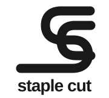

The Linked Incision
The selected one-color version keeps the linked S and C mark and rounded lowercase wordmark in a single ink color. The mark is a visual metaphor for the concept, not a product-performance guarantee.
Desktop navigation / 100px wide

One-color version / 190px wide
Small-size check / 80px wide
What to inspect
A single ink color keeps the linked mark visually simple, while the rounded lowercase wordmark softens its angular geometry. Risks: the vertical lockup may make the storefront header taller, and small-size readability needs a close look.